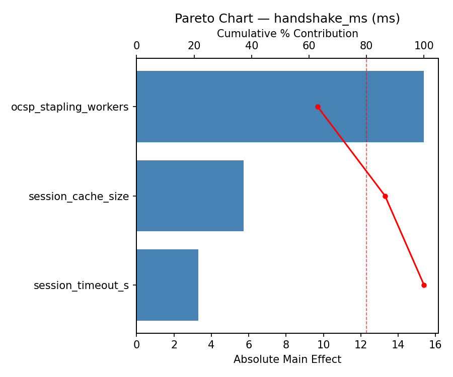
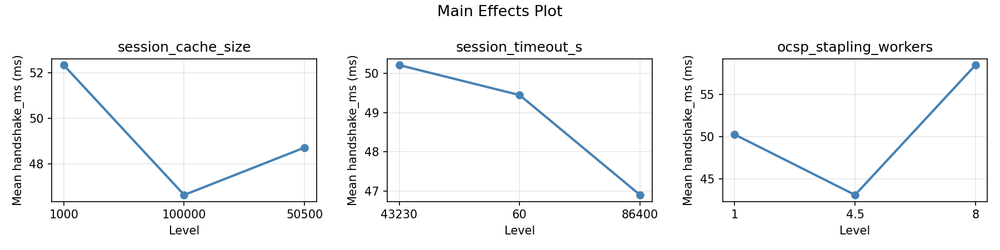
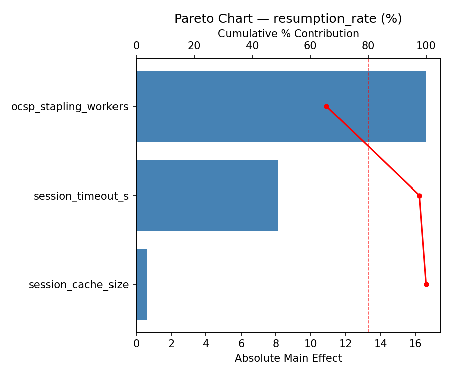
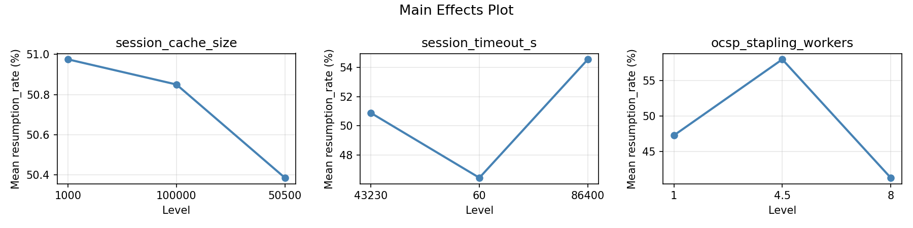
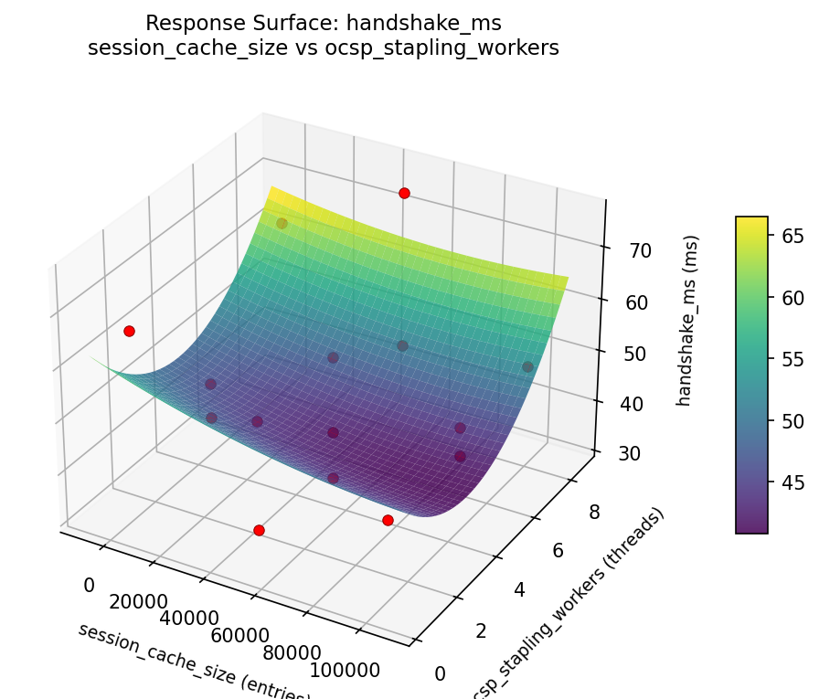
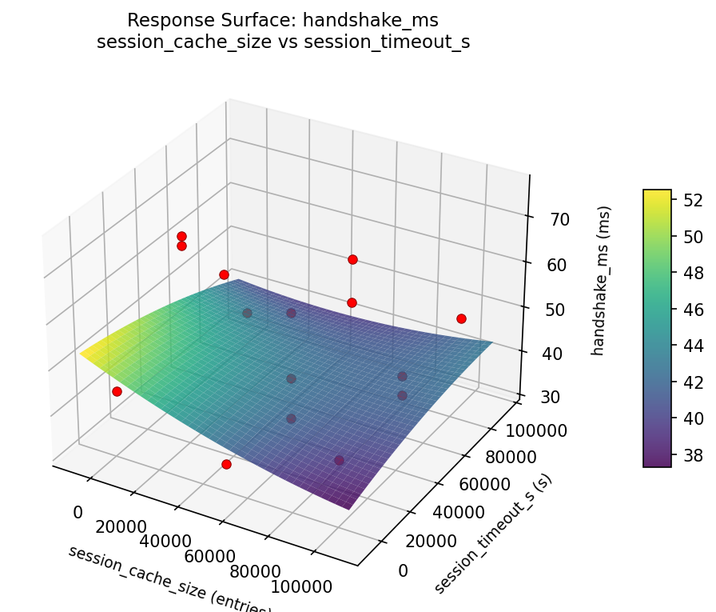
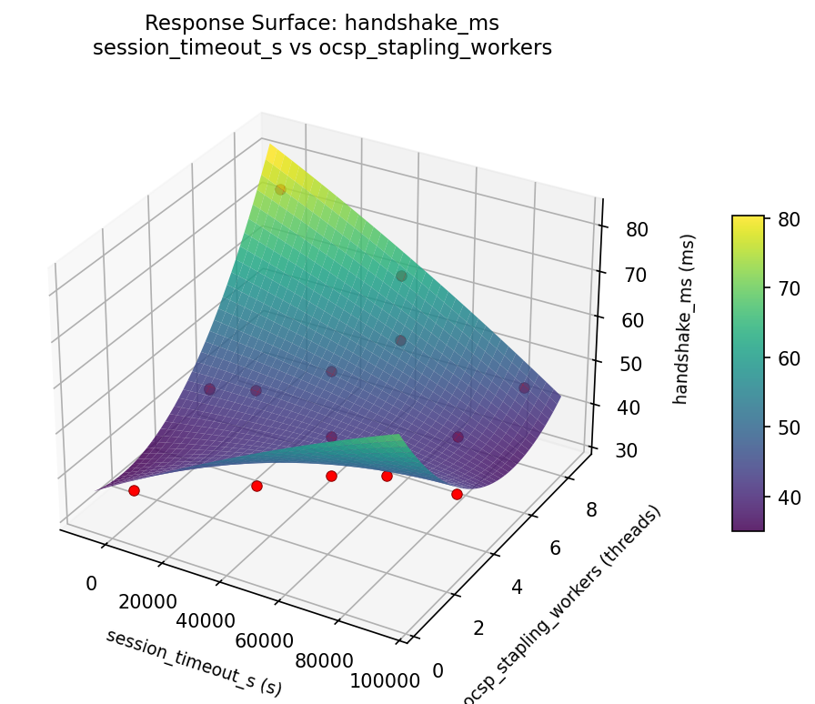
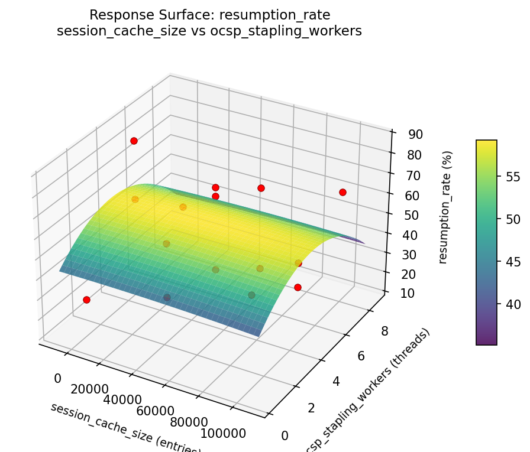
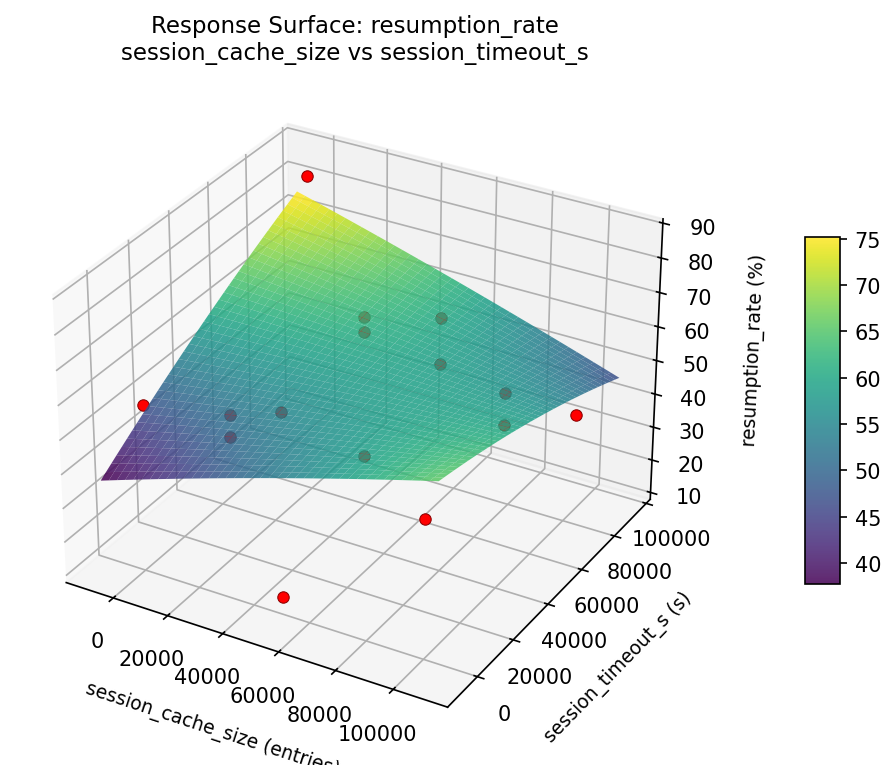
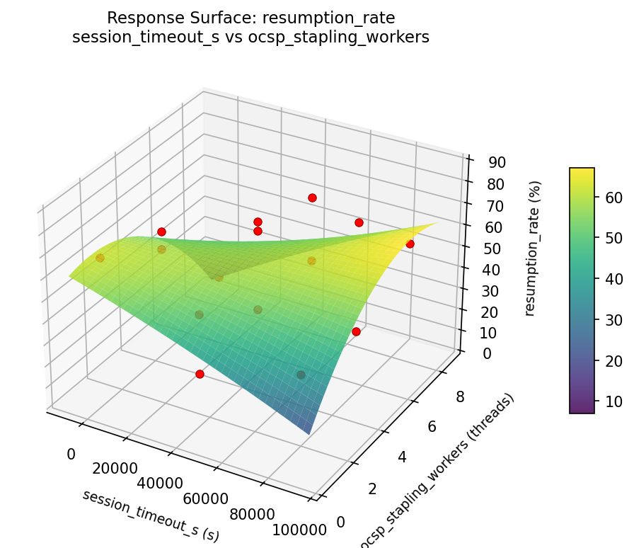

Summary
This experiment investigates tls handshake optimization. Box-Behnken design for TLS version, cipher choice, and session cache for handshake speed.
The design varies 3 factors: session cache size (entries), ranging from 1000 to 100000, session timeout s (s), ranging from 60 to 86400, and ocsp stapling workers (threads), ranging from 1 to 8. The goal is to optimize 2 responses: handshake ms (ms) (minimize) and resumption rate (%) (maximize). Fixed conditions held constant across all runs include tls version = 1.3, cipher = AES-256-GCM.
A Box-Behnken design was chosen because it efficiently fits quadratic models with 3 continuous factors while avoiding extreme corner combinations — requiring only 15 runs instead of the 8 needed for a full factorial at two levels.
Quadratic response surface models were fitted to capture potential curvature and factor interactions. The RSM contour plots below visualize how pairs of factors jointly affect each response.
Key Findings
For handshake ms, the most influential factors were ocsp stapling workers (47.4%), session timeout s (26.8%), session cache size (25.7%). The best observed value was 32.0 (at session cache size = 1000, session timeout s = 43230, ocsp stapling workers = 8).
For resumption rate, the most influential factors were ocsp stapling workers (67.1%), session cache size (17.3%), session timeout s (15.5%). The best observed value was 85.9 (at session cache size = 50500, session timeout s = 43230, ocsp stapling workers = 4.5).
Recommended Next Steps
- Run confirmation experiments at the predicted optimal settings to validate the model.
- Consider whether any fixed factors should be varied in a future study.
Experimental Setup
Factors
| Factor | Low | High | Unit |
|---|
session_cache_size | 1000 | 100000 | entries |
session_timeout_s | 60 | 86400 | s |
ocsp_stapling_workers | 1 | 8 | threads |
Fixed: tls_version = 1.3, cipher = AES-256-GCM
Responses
| Response | Direction | Unit |
|---|
handshake_ms | ↓ minimize | ms |
resumption_rate | ↑ maximize | % |
Configuration
{
"metadata": {
"name": "TLS Handshake Optimization",
"description": "Box-Behnken design for TLS version, cipher choice, and session cache for handshake speed"
},
"factors": [
{
"name": "session_cache_size",
"levels": [
"1000",
"100000"
],
"type": "continuous",
"unit": "entries"
},
{
"name": "session_timeout_s",
"levels": [
"60",
"86400"
],
"type": "continuous",
"unit": "s"
},
{
"name": "ocsp_stapling_workers",
"levels": [
"1",
"8"
],
"type": "continuous",
"unit": "threads"
}
],
"fixed_factors": {
"tls_version": "1.3",
"cipher": "AES-256-GCM"
},
"responses": [
{
"name": "handshake_ms",
"optimize": "minimize",
"unit": "ms"
},
{
"name": "resumption_rate",
"optimize": "maximize",
"unit": "%"
}
],
"settings": {
"operation": "box_behnken",
"test_script": "use_cases/48_tls_handshake_optimization/sim.sh"
}
}
Experimental Matrix
The Box-Behnken Design produces 15 runs. Each row is one experiment with specific factor settings.
| Run | session_cache_size | session_timeout_s | ocsp_stapling_workers |
|---|
| 1 | 50500 | 60 | 1 |
| 2 | 50500 | 43230 | 4.5 |
| 3 | 100000 | 43230 | 8 |
| 4 | 100000 | 43230 | 1 |
| 5 | 50500 | 43230 | 4.5 |
| 6 | 50500 | 43230 | 4.5 |
| 7 | 1000 | 43230 | 8 |
| 8 | 100000 | 60 | 4.5 |
| 9 | 50500 | 60 | 8 |
| 10 | 100000 | 86400 | 4.5 |
| 11 | 1000 | 43230 | 1 |
| 12 | 50500 | 86400 | 8 |
| 13 | 1000 | 60 | 4.5 |
| 14 | 1000 | 86400 | 4.5 |
| 15 | 50500 | 86400 | 1 |
Step-by-Step Workflow
1
Preview the design
$ python doe.py info --config use_cases/48_tls_handshake_optimization/config.json
2
Generate the runner script
$ python doe.py generate --config use_cases/48_tls_handshake_optimization/config.json \
--output use_cases/48_tls_handshake_optimization/results/run.sh --seed 42
3
Execute the experiments
$ bash use_cases/48_tls_handshake_optimization/results/run.sh
4
Analyze results
$ python doe.py analyze --config use_cases/48_tls_handshake_optimization/config.json
5
Get optimization recommendations
$ python doe.py optimize --config use_cases/48_tls_handshake_optimization/config.json
ℹ
Multi-Objective Optimization
This experiment has conflicting objectives (handshake_ms (↓), resumption_rate (↑)). Use --multi to find the best compromise using desirability functions:
$ python doe.py optimize --config use_cases/48_tls_handshake_optimization/config.json --multi
6
Generate the HTML report
$ python doe.py report --config use_cases/48_tls_handshake_optimization/config.json \
--output use_cases/48_tls_handshake_optimization/results/report.html
Features Exercised
| Feature | Value |
|---|
| Design type | box_behnken |
| Factor types | continuous (all 3) |
| Arg style | double-dash |
| Responses | 2 (handshake_ms ↓, resumption_rate ↑) |
| Total runs | 15 |
Analysis Results
Generated from actual experiment runs using the DOE Helper Tool.
Response: handshake_ms
Top factors: ocsp_stapling_workers (47.4%), session_timeout_s (26.8%), session_cache_size (25.7%).
Pareto Chart

Main Effects Plot

Response: resumption_rate
Top factors: ocsp_stapling_workers (67.1%), session_cache_size (17.3%), session_timeout_s (15.5%).
Pareto Chart

Main Effects Plot

Response Surface Plots
3D surfaces fitted with quadratic RSM. Red dots are observed data points.
handshake ms session cache size vs ocsp stapling workers

handshake ms session cache size vs session timeout s

handshake ms session timeout s vs ocsp stapling workers

resumption rate session cache size vs ocsp stapling workers

resumption rate session cache size vs session timeout s

resumption rate session timeout s vs ocsp stapling workers

Full Analysis Output
=== Main Effects: handshake_ms ===
Factor Effect Std Error % Contribution
--------------------------------------------------------------
ocsp_stapling_workers 9.1643 3.1456 47.4%
session_timeout_s 5.1857 3.1456 26.8%
session_cache_size 4.9750 3.1456 25.7%
=== Summary Statistics: handshake_ms ===
session_cache_size:
Level N Mean Std Min Max
------------------------------------------------------------
1000 4 51.8750 16.7068 36.6000 75.6000
100000 4 46.9000 5.8901 43.5000 55.7000
50500 7 48.8286 13.4522 32.0000 65.7000
session_timeout_s:
Level N Mean Std Min Max
------------------------------------------------------------
43230 7 46.9143 10.2159 35.0000 63.6000
60 4 52.1000 10.9292 41.0000 65.7000
86400 4 50.0250 18.4435 32.0000 75.6000
ocsp_stapling_workers:
Level N Mean Std Min Max
------------------------------------------------------------
1 4 45.9500 3.8906 41.0000 49.3000
4.5 7 53.6143 13.5065 35.0000 75.6000
8 4 44.4500 14.9342 32.0000 65.7000
=== Main Effects: resumption_rate ===
Factor Effect Std Error % Contribution
--------------------------------------------------------------
ocsp_stapling_workers 19.3821 5.1048 67.1%
session_cache_size 5.0071 5.1048 17.3%
session_timeout_s 4.4857 5.1048 15.5%
=== Summary Statistics: resumption_rate ===
session_cache_size:
Level N Mean Std Min Max
------------------------------------------------------------
1000 4 47.6500 30.6447 13.2000 85.9000
100000 4 50.2000 7.1568 40.8000 57.0000
50500 7 52.6571 20.1511 27.2000 74.0000
session_timeout_s:
Level N Mean Std Min Max
------------------------------------------------------------
43230 7 52.5857 19.5817 33.5000 85.9000
60 4 48.1000 18.2594 27.2000 69.7000
86400 4 49.8750 26.5633 13.2000 74.0000
ocsp_stapling_workers:
Level N Mean Std Min Max
------------------------------------------------------------
1 4 56.1000 14.3404 36.8000 69.7000
4.5 7 41.6429 17.2757 13.2000 66.8000
8 4 61.0250 25.4784 27.2000 85.9000
Optimization Recommendations
=== Optimization: handshake_ms ===
Direction: minimize
Best observed run: #3
session_cache_size = 1000
session_timeout_s = 43230
ocsp_stapling_workers = 8
Value: 32.0
RSM Model (linear, R² = 0.0636, Adj R² = -0.1918):
Coefficients:
intercept +49.1267
session_cache_size +2.9375
session_timeout_s +2.7625
ocsp_stapling_workers -0.5000
RSM Model (quadratic, R² = 0.6125, Adj R² = -0.0850):
Coefficients:
intercept +42.4333
session_cache_size +2.9375
session_timeout_s +2.7625
ocsp_stapling_workers -0.5000
session_cache_size*session_timeout_s -1.1000
session_cache_size*ocsp_stapling_workers -0.1750
session_timeout_s*ocsp_stapling_workers -1.2250
session_cache_size^2 -8.4417
session_timeout_s^2 +11.3083
ocsp_stapling_workers^2 +9.6833
Curvature analysis:
session_timeout_s coef=+11.3083 convex (has a minimum)
ocsp_stapling_workers coef=+9.6833 convex (has a minimum)
session_cache_size coef=-8.4417 concave (has a maximum)
Notable interactions:
session_timeout_s*ocsp_stapling_workers coef=-1.2250 (antagonistic)
session_cache_size*session_timeout_s coef=-1.1000 (antagonistic)
Predicted optimum (from quadratic model):
session_cache_size = 50500
session_timeout_s = 86400
ocsp_stapling_workers = 1
Predicted value: 67.9125
Model quality: Moderate fit — use predictions directionally, not precisely.
Factor importance:
1. session_timeout_s (effect: 14.0, contribution: 38.0%)
2. session_cache_size (effect: 12.9, contribution: 35.0%)
3. ocsp_stapling_workers (effect: 10.0, contribution: 27.1%)
=== Optimization: resumption_rate ===
Direction: maximize
Best observed run: #10
session_cache_size = 50500
session_timeout_s = 43230
ocsp_stapling_workers = 4.5
Value: 85.9
RSM Model (linear, R² = 0.0857, Adj R² = -0.1636):
Coefficients:
intercept +50.6667
session_cache_size -5.5000
session_timeout_s -5.3000
ocsp_stapling_workers +0.5500
RSM Model (quadratic, R² = 0.4312, Adj R² = -0.5926):
Coefficients:
intercept +62.0667
session_cache_size -5.5000
session_timeout_s -5.3000
ocsp_stapling_workers +0.5500
session_cache_size*session_timeout_s +2.3000
session_cache_size*ocsp_stapling_workers +2.4000
session_timeout_s*ocsp_stapling_workers +3.9500
session_cache_size^2 +6.2417
session_timeout_s^2 -19.1083
ocsp_stapling_workers^2 -8.5083
Curvature analysis:
session_timeout_s coef=-19.1083 concave (has a maximum)
ocsp_stapling_workers coef=-8.5083 concave (has a maximum)
session_cache_size coef=+6.2417 convex (has a minimum)
Notable interactions:
session_timeout_s*ocsp_stapling_workers coef=+3.9500 (synergistic)
session_cache_size*ocsp_stapling_workers coef=+2.4000 (synergistic)
session_cache_size*session_timeout_s coef=+2.3000 (synergistic)
Predicted optimum (from linear model):
session_cache_size = 1000
session_timeout_s = 60
ocsp_stapling_workers = 4.5
Predicted value: 61.4667
Model quality: Weak fit — consider adding center points or using a different design.
Factor importance:
1. session_timeout_s (effect: 24.2, contribution: 52.6%)
2. session_cache_size (effect: 13.7, contribution: 29.7%)
3. ocsp_stapling_workers (effect: 8.1, contribution: 17.7%)